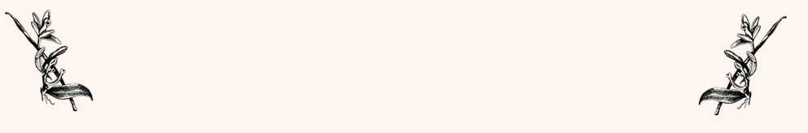

There’s nothing quite like the smell of fresh vanilla. Not only does vanilla add great flavor to cookies and cakes, it can also be used as a natural perfume or cologne. Vanilla beans are highly prized in culinary circles, and many foodies consider it an essential ingredient for any pantry or baking cabinet. There is, however, a common artificial vanilla flavoring called vanillin that is produced as a way to get “the same thing” at a reduced cost. Unfortunately, vanillin is lacking in flavor and consumption of this artificial enhancer may not be a great idea.
Vanillin is a vanilla extract alternative made from wood pulp. It is commonly used to reduce production costs. And, unlike real vanilla extract which is produced from real vanilla beans, vanillin is synthetic and may be produced using petrochemicals and byproducts from the paper industry. Unfortunately, because it’s cheap, the stuff is everywhere. Vanilla flavored over-the-counter medicines, beverages, and cookies are all places you’re likely to find vanillin.
Vanilla is a natural aphrodisiac and a good source of B vitamins. It’s also a natural stress reliever and mood booster. Vanilla beans are usually soaked with a liquid medium such as alcohol or glycerin (a food-based sweet liquid) for a certain number of weeks to produce vanilla extract. Vanillin, is also called “imitation vanilla”. Imitation vanilla may also be called “vanilla flavor”, and it is often combined with sugar, corn syrup, or a similar low-quality sweetener to make the product taste better. It’s chemically produced to mimic the taste of vanilla but is not however, true vanilla.
Then there’s the price and the flavor. Real vanilla is always worth a few extra dollars, and you’ll likely notice it on the price tag. If a vanilla product you’re buying is extremely cheap, most likely it’s not real vanilla. Real vanilla also has a deep, complex flavor, not an overly sweet taste. Real vanilla has an almost smokey flavor with a depth that cheap vanilla simply can’t replace.